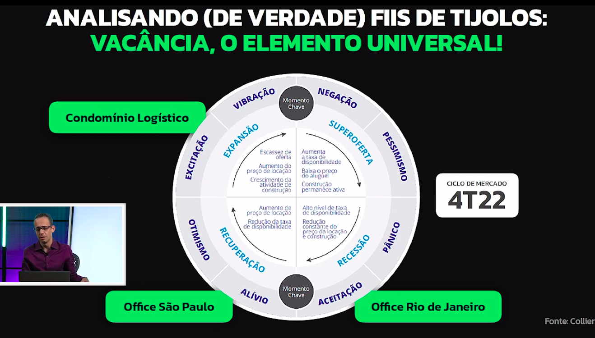
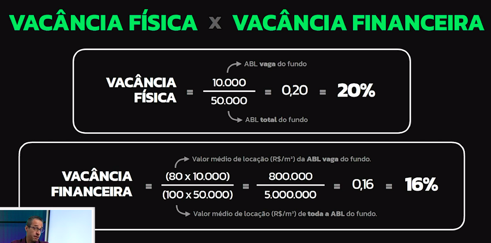
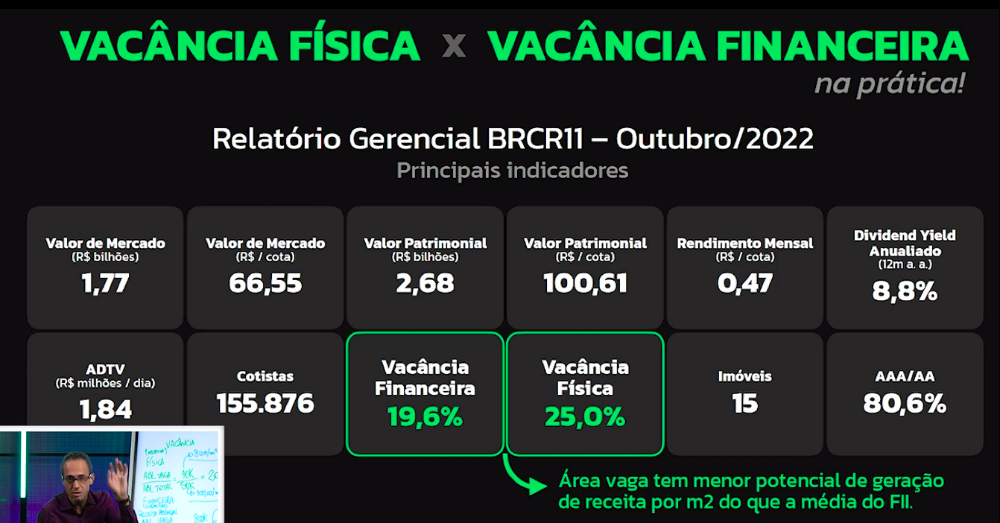
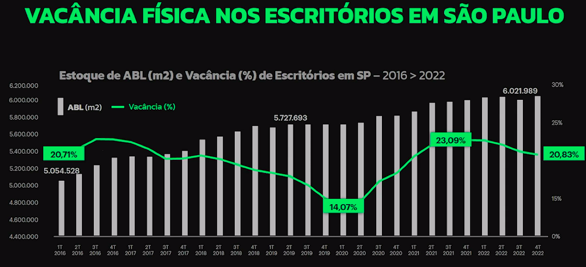
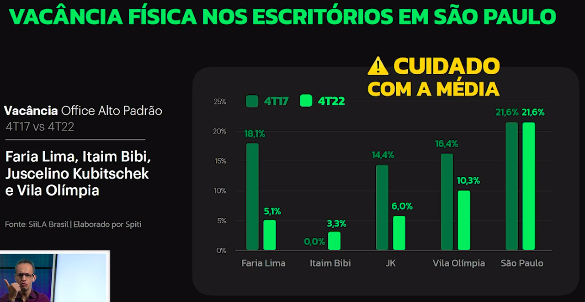
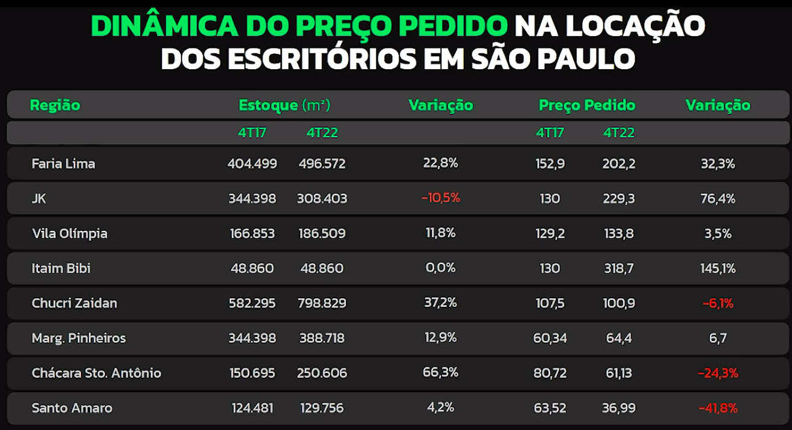
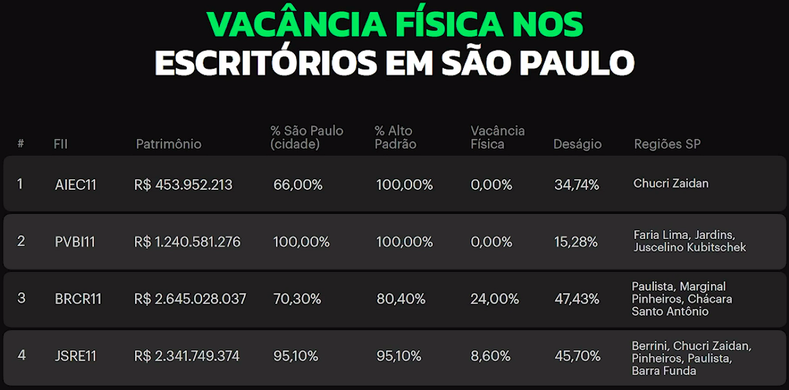
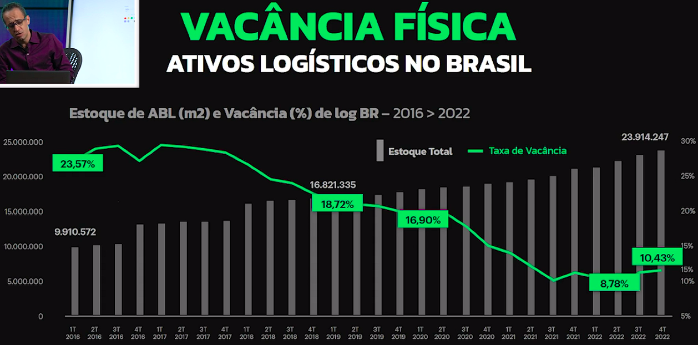
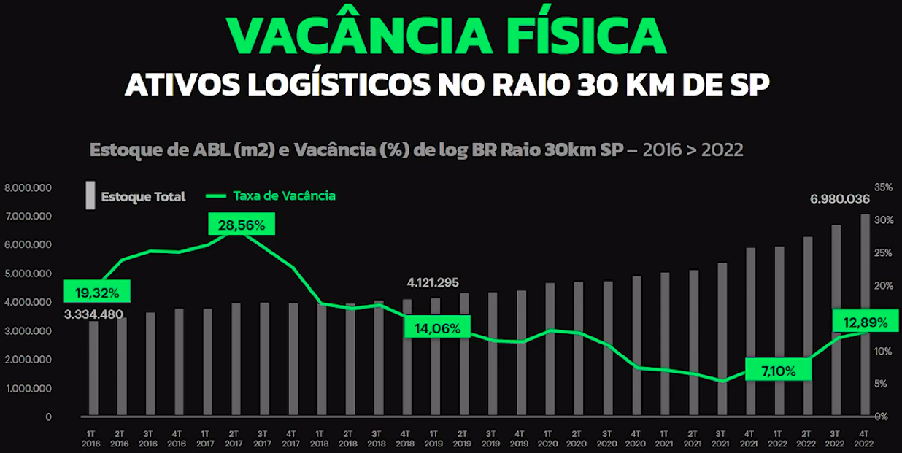

Aula 2 - Localização, o elemento inicial na análise de investimentos imobiliário
Vacância
Além do DY (dividend yield), outro aspecto que precisa ser levado em consideração na análise de fundos de tijolos é a vacância, que diz respeito à quantidade de imóveis vagos. Quanto maior vacância, menor vai ser o aluguel arrecadado e consequentemente, o lucro desse fundo será menor.

Cálculo da vacância
Existem dois tipos de vacância, a física e a financeira.
Vacância física
A vacância física é expressa em um percentual e se dá por meio do seguinte cálculo:
(ABL vaga / ABL total)
ABL = Área bruta locável
Vacância financeira
A vacância financeira, por sua vez, não leva em consideração a quantidade de áreas vagas, mas sim o valor que essas áreas vagas representam do valor total do imóvel. Ela também é um percentual e se dá pelo seguinte cálculo:
(Valor médio ABL vaga / Valor médio ABL total)
ABL = Área bruta locável
A vacância financeira não é 100% precisa, uma vez que o valor da área não locada e o valor da área total são estimados, então a vacância, nesse caso, será um valor subjetivo.

Onde se encontra as informações de vacância de um fundo?
No relatório gerencial de um fundo imobiliário, é possível encontrar ambas as vacâncias (física e financeira).

Exemplos de análise de vacância dos FIIs
Houve um aumento na média de vacância nos escritórios de São Paulo durante a pandemia. Isso ocorreu por conta do aumento do trabalho home office, por consequência, o número de escritórios vagos aumentou. A vacância voltou a diminuir após a diminuição dos casos de Corona vírus e a volta gradual aos escritórios.

A média de vacância deve ser analisada com cuidado pois não expressa totalmente a situação atual dos fundos. No exemplo abaixo, a cidade de São Paulo ficou com uma média de 21,6% de vacância durante um certo período. No entanto, muitas regiões ficaram com uma vacância bem abaixo da média enquanto outras ficaram bem acima da média.

Dependendo do percentual de vacância, o valor pedido na locação de um imóvel pode ter uma variação. Quando menor a vacância, a variação tende a ser bem positiva, como no caso da região "Itaim Bibi" do exemplo abaixo. Já quando a vacância é alta, a variação tende a ser menor e pode até ser negativa, como no caso de "Santo Amaro".



